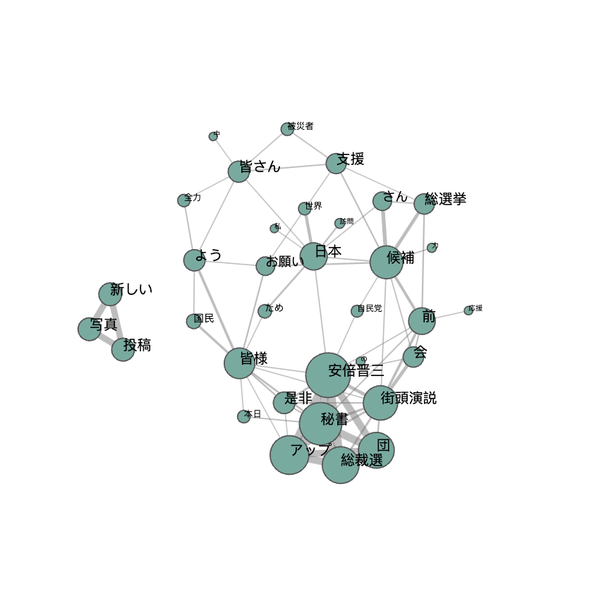

9.7. 演習・Twitterのテキスト分類問題#
実データを用いて機械学習を用いた分類問題を実践例として、Twitter投稿データの分類問題を考えます。
（ここでは、2020年に収集したデータを用います）
2019年時点で 政治家のうち最もフォロワー数がいる2人（橋下徹 @hashimoto_lo 安倍晋三 @AbeShinzo）のツイートをそれぞれどのユーザーの発信によるものか分類してみましょう。
import pandas as pd
import pickle
import numpy as np
from matplotlib import pyplot as plt
import japanize_matplotlib
%matplotlib inline
pd.set_option('display.max_columns', 100)
dfs = []
for user in ['hashimoto_lo','AbeShinzo']:
with open('./data/tweets_{}.pkl'.format(user), 'rb') as f:
tmp = pickle.load(f)
dfs.append(tmp)
df = pd.concat(dfs)
df.info()
<class 'pandas.core.frame.DataFrame'>
Int64Index: 5284 entries, 0 to 2067
Data columns (total 29 columns):
# Column Non-Null Count Dtype
--- ------ -------------- -----
0 contributors 0 non-null object
1 coordinates 0 non-null object
2 created_at 5284 non-null object
3 entities 5284 non-null object
4 extended_entities 674 non-null object
5 favorite_count 5284 non-null int64
6 favorited 5284 non-null bool
7 geo 0 non-null object
8 id 5284 non-null int64
9 id_str 5284 non-null object
10 in_reply_to_screen_name 812 non-null object
11 in_reply_to_status_id 810 non-null float64
12 in_reply_to_status_id_str 810 non-null object
13 in_reply_to_user_id 812 non-null float64
14 in_reply_to_user_id_str 812 non-null object
15 is_quote_status 5284 non-null bool
16 lang 5284 non-null object
17 place 1 non-null object
18 possibly_sensitive 3521 non-null object
19 quoted_status 782 non-null object
20 quoted_status_id 1017 non-null float64
21 quoted_status_id_str 1017 non-null object
22 retweet_count 5284 non-null int64
23 retweeted 5284 non-null bool
24 retweeted_status 1040 non-null object
25 source 5284 non-null object
26 text 5284 non-null object
27 truncated 5284 non-null bool
28 user 5284 non-null object
dtypes: bool(4), float64(3), int64(3), object(19)
memory usage: 1.1+ MB
df.head(5)
| contributors | coordinates | created_at | entities | extended_entities | favorite_count | favorited | geo | id | id_str | in_reply_to_screen_name | in_reply_to_status_id | in_reply_to_status_id_str | in_reply_to_user_id | in_reply_to_user_id_str | is_quote_status | lang | place | possibly_sensitive | quoted_status | quoted_status_id | quoted_status_id_str | retweet_count | retweeted | retweeted_status | source | text | truncated | user | |
|---|---|---|---|---|---|---|---|---|---|---|---|---|---|---|---|---|---|---|---|---|---|---|---|---|---|---|---|---|---|
| 0 | None | None | Sun Aug 02 22:39:43 +0000 2020 | {'hashtags': [], 'symbols': [], 'user_mentions... | NaN | 399 | False | None | 1290054702210531329 | 1290054702210531329 | None | NaN | None | NaN | None | False | ja | None | False | NaN | NaN | NaN | 44 | False | NaN | <a href="http://twitter.com/download/android" ... | （スタッフよりお知らせ）本日13:55より生放送「情報ライブ ミヤネ屋」（読売テレビ）に、橋... | False | {'id': 245677083, 'id_str': '245677083', 'name... |
| 1 | None | None | Sat Aug 01 15:49:14 +0000 2020 | {'hashtags': [{'text': '日曜報道THEPRIME', 'indice... | NaN | 0 | False | None | 1289589012785586176 | 1289589012785586176 | None | NaN | None | NaN | None | False | ja | None | NaN | NaN | NaN | NaN | 98 | False | {'created_at': 'Sat Aug 01 15:14:22 +0000 2020... | <a href="http://twitter.com/download/iphone" r... | RT @THEPRIME_CX: 今日の #日曜報道THEPRIME は...【感染列島８月... | False | {'id': 245677083, 'id_str': '245677083', 'name... |
| 2 | None | None | Sat Aug 01 13:45:07 +0000 2020 | {'hashtags': [], 'symbols': [], 'user_mentions... | NaN | 1693 | False | None | 1289557775266136064 | 1289557775266136064 | hashimoto_lo | 1.289558e+18 | 1289557773630414850 | 245677083.0 | 245677083 | False | ja | None | NaN | NaN | NaN | NaN | 189 | False | NaN | <a href="http://twitter.com/download/iphone" r... | 評論家には政治はできません。ただうまくメッセージを出せない政治家も多いでしょう。政治に評論家... | False | {'id': 245677083, 'id_str': '245677083', 'name... |
| 3 | None | None | Sat Aug 01 13:45:06 +0000 2020 | {'hashtags': [], 'symbols': [], 'user_mentions... | NaN | 1341 | False | None | 1289557773630414850 | 1289557773630414850 | None | NaN | None | NaN | None | True | ja | None | False | {'created_at': 'Sat Aug 01 07:14:22 +0000 2020... | 1.289459e+18 | 1289459440555450369 | 131 | False | NaN | <a href="http://twitter.com/download/iphone" r... | それは党内の政治事情ですね。このような場合、僕が代表だったときには、有権者には「本来この特措... | True | {'id': 245677083, 'id_str': '245677083', 'name... |
| 4 | None | None | Sat Aug 01 12:00:34 +0000 2020 | {'hashtags': [], 'symbols': [], 'user_mentions... | NaN | 749 | False | None | 1289531464892088320 | 1289531464892088320 | None | NaN | None | NaN | None | False | ja | None | False | NaN | NaN | NaN | 67 | False | NaN | <a href="https://abema.tv" rel="nofollow">ABEM... | NewsBAR橋下、始まりました！（スタッフより） @ABEMA で視聴中 https://... | False | {'id': 245677083, 'id_str': '245677083', 'name... |
df['user_name'] = df['user'].apply(lambda x: x['name'])
df = df.drop_duplicates(['id'])
df['user_screen_name'] = df['user'].apply(lambda x: x['screen_name'])
9.7.1. 全期間におけるユーザー別ツイート数#
fig, ax = plt.subplots(1,1,figsize= (5,4))
N_tweets_users = pd.DataFrame(df['user_screen_name'].value_counts()).sort_values(by = 'user_screen_name', ascending=False)
plt.bar(N_tweets_users.index, N_tweets_users['user_screen_name'], color = 'lightblue')
for index, value in enumerate(N_tweets_users['user_screen_name']):
plt.text(index, value+30, str(value), ha = 'center')
plt.title('Number of Tweets per user in the dataset')
plt.xlabel('# of tweets')
plt.xticks(rotation=20)
plt.show()
分析対象はRetweetでは無いオリジナルのTweetsのみとする
df = df[df['retweeted_status'].isnull()]
print(df.shape)
(4244, 31)
fig, ax = plt.subplots(1,1,figsize= (5,4))
N_tweets_users = pd.DataFrame(df['user_screen_name'].value_counts()).sort_values(by = 'user_screen_name', ascending=False)
plt.bar(N_tweets_users.index, N_tweets_users['user_screen_name'], color = 'lightblue')
for index, value in enumerate(N_tweets_users['user_screen_name']):
plt.text(index, value+30, str(value), ha='center')
plt.title('Number of Tweets per user in the dataset')
plt.xlabel('# of tweets')
plt.xticks(rotation=20)
plt.show()
9.7.2. 年別のツイート数#
df['created_at'] = pd.to_datetime(df['created_at'])
df['date'] = df['created_at'].dt.date
df['year'] = df['created_at'].dt.year
df['time'] = df['created_at'].dt.time
df.head(1)
| contributors | coordinates | created_at | entities | extended_entities | favorite_count | favorited | geo | id | id_str | in_reply_to_screen_name | in_reply_to_status_id | in_reply_to_status_id_str | in_reply_to_user_id | in_reply_to_user_id_str | is_quote_status | lang | place | possibly_sensitive | quoted_status | quoted_status_id | quoted_status_id_str | retweet_count | retweeted | retweeted_status | source | text | truncated | user | user_name | user_screen_name | date | year | time | |
|---|---|---|---|---|---|---|---|---|---|---|---|---|---|---|---|---|---|---|---|---|---|---|---|---|---|---|---|---|---|---|---|---|---|---|
| 0 | None | None | 2020-08-02 22:39:43+00:00 | {'hashtags': [], 'symbols': [], 'user_mentions... | NaN | 399 | False | None | 1290054702210531329 | 1290054702210531329 | None | NaN | None | NaN | None | False | ja | None | False | NaN | NaN | NaN | 44 | False | NaN | <a href="http://twitter.com/download/android" ... | （スタッフよりお知らせ）本日13:55より生放送「情報ライブ ミヤネ屋」（読売テレビ）に、橋... | False | {'id': 245677083, 'id_str': '245677083', 'name... | 橋下徹 | hashimoto_lo | 2020-08-02 | 2020 | 22:39:43 |
pd.crosstab(df['user_name'],df['year'])
| year | 2012 | 2013 | 2014 | 2015 | 2016 | 2017 | 2018 | 2019 | 2020 |
|---|---|---|---|---|---|---|---|---|---|
| user_name | |||||||||
| 安倍晋三 | 336 | 315 | 318 | 168 | 62 | 73 | 247 | 288 | 203 |
| 橋下徹 | 0 | 0 | 0 | 0 | 0 | 0 | 21 | 1212 | 1001 |
pd.crosstab(df['user_name'],df['year']).T.plot.bar(stacked=True, color=['blue','skyblue'])
plt.title('Yearly Tweets Numbers', fontsize=15)
plt.xlabel('year', fontsize=15)
plt.ylabel('# of tweets', fontsize=15)
plt.show()
9.7.3. ユーザー別のLikesのヒストグラム#
import matplotlib.pyplot as plt
fig, ax = plt.subplots(1,1, figsize=(5,3))
for i, arr in enumerate(df.groupby(['user_screen_name'])['favorite_count']):
ax.hist(arr[1], bins = 100,
color=['blue','skyblue'][i], alpha = .7, label = arr[0])
plt.legend()
plt.title('Histgram of likes per user', fontsize=15)
plt.ylabel('Frequency', fontsize=13)
plt.xlabel('Number of Likes', fontsize=13)
plt.show()
上の図では少しわかりにくいので、対数変換値をプロット
fig, ax = plt.subplots(1,1, figsize=(5,3))
for i, arr in enumerate(df.groupby(['user_screen_name'])['favorite_count']):
ax.hist(arr[1].apply(lambda x: np.log(1+x)), bins = 100,
color=['blue','skyblue'][i], alpha = .7, label = arr[0])
plt.legend()
plt.title('Histgram of likes per user (log-scaled)', fontsize=15)
plt.ylabel('Frequency', fontsize=13)
plt.xlabel('Number of Likes (log-scaled)', fontsize=13)
plt.show()
9.7.4. ユーザー別のRetweetされた数のヒストグラム#
fig, ax = plt.subplots(1,1, figsize=(5,3))
for i, arr in enumerate(df.groupby(['user_screen_name'])['retweet_count']):
ax.hist(arr[1], bins = 100,
color=['blue','skyblue'][i], alpha = .7, label = arr[0])
plt.legend()
plt.title('Histgram of retweet per user', fontsize=15)
plt.ylabel('Frequency', fontsize=13)
plt.xlabel('Number of retweet', fontsize=13)
plt.show()
上の図では少しわかりにくいので、対数変換値をプロット
fig, ax = plt.subplots(1,1, figsize=(5,3))
for i, arr in enumerate(df.groupby(['user_screen_name'])['retweet_count']):
ax.hist(arr[1].apply(lambda x: np.log(1+x)), bins = 100,
color=['blue','skyblue'][i], alpha = .7, label = arr[0])
plt.legend()
plt.title('Histgram of retweet per user (log-scaled)', fontsize=15)
plt.ylabel('Frequency', fontsize=13)
plt.xlabel('Number of Retweet (log-scaled)', fontsize=13)
plt.show()
9.7.5. 日本語の正規化（表記ゆれの是正）と形態素解析を行う#
9.7.5.1. 正規化#
正規化を自動で実施してくれるパッケージをインストール。Terminal or Anaconda Prompt で
pip install neologdnimport nelogdnneologdn.normalize()で正規化Regular ExpressionでテキストからURLを除外する
9.7.5.2. 形態素解析#
mac の場合
Homebrewをインストール Terminal で
/bin/bash -c "$(curl -fsSL https://raw.githubusercontent.com/Homebrew/install/master/install.sh)"とうつbrew install mecabbrew install mecab-ipadicgit clone --depth 1 https://github.com/neologd/mecab-ipadic-neologd.gitcd ./mecab-ipadic-neologd./bin/install-mecab-ipadic-neologd -npip install mecab-python3
import neologdn
import re
import MeCab
from sklearn.feature_extraction.text import CountVectorizer
from sklearn.feature_extraction.text import TfidfVectorizer
from sklearn.model_selection import train_test_split
from sklearn.linear_model import LogisticRegression
from sklearn.metrics import classification_report
from sklearn import metrics
from sklearn.metrics import roc_auc_score
from sklearn.metrics import roc_curve
from sklearn.ensemble import RandomForestClassifier
from sklearn import svm
import sklearn as sk
from sklearn.neural_network import MLPClassifier
from sklearn.decomposition import PCA
from sklearn.cluster import MiniBatchKMeans
import itertools, random
正規化
df.loc[:,'standarized_text'] = df['text'].apply(lambda x: neologdn.normalize(x))
pat = re.compile(r'https?://\S+')
df.loc[:, 'standarized_text'] = df['standarized_text'].apply(lambda x: re.sub(pat, '', x))
neologd_tagger = MeCab.Tagger('-Ochasen -d /opt/homebrew/lib/mecab/dic/mecab-ipadic-neologd')
print(neologd_tagger.parse('庭には二羽鶏がいる'))
庭 ニワ 庭 名詞-一般
に ニ に 助詞-格助詞-一般
は ハ は 助詞-係助詞
二羽 ニワ 二羽 名詞-固有名詞-人名-姓
鶏 ニワトリ 鶏 名詞-一般
が ガ が 助詞-格助詞-一般
いる イル いる 動詞-自立 一段 基本形
EOS
def make_words_list(cell):
import re
pat = re.compile('━|\-|\.|\,|[━!-)+,-\./:-@[-`{-~]|^[0-9０-９]+$|^\*$|http|www|html|jp|com|^[a-zA-Z]+$|する|こと|いる|ます')
a = cell[-3]
b = cell[1]
if a == '*': pass
elif b in ('名詞','形容詞'): #'動詞',,'感動詞'
if pat.match(a) !=None: pass
else:
return a
else:pass
def tokenize(cell):
tokens = []
neologd_tagger.parse('')
node = neologd_tagger.parseToNode(str(cell))
while node:
tokens.append([node.surface, *node.feature.split(',')])
node = node.next
list_words = [x for x in list(map(make_words_list, tokens)) if x is not None]
return list_words
# Tf-idfを用いる場合
# vectorizer = TfidfVectorizer(analyzer=tokenize)
vectorizer = CountVectorizer(analyzer=tokenize,min_df=20,max_df=.9)
text = vectorizer.fit_transform(df['standarized_text'])
text.shape, df[['user_screen_name']].values.shape
((4244, 555), (4244, 1))
X = pd.DataFrame(text.toarray(), index= df['user_screen_name'],columns = vectorizer.get_feature_names_out())
# もし`get_feature_names_out`でエラーが出たら次のラインで試してください。
# X = pd.DataFrame(text.toarray(), index= df['user_screen_name'],columns = vectorizer.get_feature_names())
X.sample(2)
| 12時 | 30分 | G20 | Yahoo!ニュース | あと | いい | うち | おかしい | お昼 | お知らせ | お祈り | お見舞い | お金 | お願い | ここ | こちら | これ | ご覧 | さ | さん | すべて | そう | そこ | そのため | その後 | それ | たくさん | たち | ため | とき | ところ | ない | の | はじめ | はず | まま | みなさま | もと | もの | やり方 | よい | よう | わけ | ん | アップ | イベント | インタビュー | インテリ | インフルエンザ | ウィル | ... | 訪問 | 評価 | 話 | 認識 | 説明 | 誰 | 課題 | 調査 | 論 | 警察 | 議員 | 議論 | 負担 | 責任 | 貴殿 | 費 | 賛成 | 軽症 | 連中 | 連携 | 違い | 選択 | 選挙 | 避難 | 邦人 | 都 | 重症 | 重要 | 野党 | 金 | 開催 | 間 | 間違い | 関係 | 関西 | 関西テレビ | 限り | 陛下 | 際 | 雇用調整助成金 | 雑誌 | 靖国 | 非常 | 韓国 | 頃 | 首相 | 首相官邸 | 首脳 | 首脳会談 | 高い | |
|---|---|---|---|---|---|---|---|---|---|---|---|---|---|---|---|---|---|---|---|---|---|---|---|---|---|---|---|---|---|---|---|---|---|---|---|---|---|---|---|---|---|---|---|---|---|---|---|---|---|---|---|---|---|---|---|---|---|---|---|---|---|---|---|---|---|---|---|---|---|---|---|---|---|---|---|---|---|---|---|---|---|---|---|---|---|---|---|---|---|---|---|---|---|---|---|---|---|---|---|---|---|
| user_screen_name | |||||||||||||||||||||||||||||||||||||||||||||||||||||||||||||||||||||||||||||||||||||||||||||||||||||
| AbeShinzo | 0 | 0 | 0 | 0 | 0 | 0 | 0 | 0 | 0 | 0 | 0 | 0 | 0 | 0 | 0 | 0 | 0 | 0 | 0 | 0 | 0 | 0 | 0 | 0 | 0 | 0 | 0 | 0 | 0 | 0 | 0 | 0 | 0 | 0 | 0 | 0 | 0 | 0 | 0 | 0 | 0 | 0 | 0 | 0 | 0 | 0 | 0 | 0 | 0 | 0 | ... | 0 | 0 | 0 | 0 | 0 | 0 | 0 | 0 | 0 | 0 | 0 | 0 | 0 | 0 | 0 | 0 | 0 | 0 | 0 | 0 | 0 | 0 | 0 | 0 | 0 | 0 | 0 | 0 | 0 | 0 | 0 | 0 | 0 | 0 | 0 | 0 | 0 | 0 | 0 | 0 | 0 | 0 | 0 | 0 | 0 | 0 | 0 | 0 | 0 | 0 |
| hashimoto_lo | 0 | 0 | 0 | 0 | 0 | 0 | 0 | 0 | 0 | 0 | 0 | 0 | 0 | 0 | 0 | 0 | 0 | 0 | 0 | 1 | 0 | 0 | 0 | 0 | 0 | 0 | 0 | 0 | 0 | 0 | 0 | 0 | 0 | 0 | 0 | 0 | 0 | 0 | 0 | 0 | 0 | 0 | 0 | 0 | 0 | 0 | 0 | 0 | 0 | 0 | ... | 0 | 0 | 0 | 0 | 0 | 0 | 0 | 0 | 0 | 0 | 0 | 0 | 0 | 0 | 0 | 0 | 0 | 0 | 0 | 0 | 0 | 0 | 0 | 0 | 0 | 0 | 0 | 0 | 0 | 0 | 0 | 0 | 0 | 0 | 0 | 0 | 0 | 0 | 0 | 0 | 0 | 0 | 0 | 0 | 0 | 0 | 0 | 0 | 0 | 0 |
2 rows × 555 columns
cat = pd.Categorical(df['user_screen_name'])
y = cat.codes
print(cat.categories)
y
Index(['AbeShinzo', 'hashimoto_lo'], dtype='object')
array([1, 1, 1, ..., 0, 0, 0], dtype=int8)
X.shape, df.shape
((4244, 555), (4244, 35))
df = df[['created_at','user_name', 'user_screen_name', 'favorite_count','retweet_count',
'retweeted_status','text','standarized_text','extended_entities']].reset_index(drop=True).merge(X.reset_index(drop=True),
left_index=True, right_index=True)
df.head(2)
| created_at | user_name | user_screen_name | favorite_count | retweet_count | retweeted_status | text | standarized_text | extended_entities | 12時 | 30分 | G20 | Yahoo!ニュース | あと | いい | うち | おかしい | お昼 | お知らせ | お祈り | お見舞い | お金 | お願い | ここ | こちら | これ | ご覧 | さ | さん | すべて | そう | そこ | そのため | その後 | それ | たくさん | たち | ため | とき | ところ | ない | の | はじめ | はず | まま | みなさま | もと | もの | やり方 | よい | ... | 訪問 | 評価 | 話 | 認識 | 説明 | 誰 | 課題 | 調査 | 論 | 警察 | 議員 | 議論 | 負担 | 責任 | 貴殿 | 費 | 賛成 | 軽症 | 連中 | 連携 | 違い | 選択 | 選挙 | 避難 | 邦人 | 都 | 重症 | 重要 | 野党 | 金 | 開催 | 間 | 間違い | 関係 | 関西 | 関西テレビ | 限り | 陛下 | 際 | 雇用調整助成金 | 雑誌 | 靖国 | 非常 | 韓国 | 頃 | 首相 | 首相官邸 | 首脳 | 首脳会談 | 高い | |
|---|---|---|---|---|---|---|---|---|---|---|---|---|---|---|---|---|---|---|---|---|---|---|---|---|---|---|---|---|---|---|---|---|---|---|---|---|---|---|---|---|---|---|---|---|---|---|---|---|---|---|---|---|---|---|---|---|---|---|---|---|---|---|---|---|---|---|---|---|---|---|---|---|---|---|---|---|---|---|---|---|---|---|---|---|---|---|---|---|---|---|---|---|---|---|---|---|---|---|---|---|---|
| 0 | 2020-08-02 22:39:43+00:00 | 橋下徹 | hashimoto_lo | 399 | 44 | NaN | （スタッフよりお知らせ）本日13:55より生放送「情報ライブ ミヤネ屋」（読売テレビ）に、橋... | (スタッフよりお知らせ)本日13:55より生放送「情報ライブミヤネ屋」(読売テレビ)に、橋下... | NaN | 0 | 0 | 0 | 0 | 0 | 0 | 0 | 0 | 0 | 1 | 0 | 0 | 0 | 0 | 0 | 0 | 0 | 1 | 0 | 0 | 0 | 0 | 0 | 0 | 0 | 0 | 0 | 0 | 0 | 0 | 0 | 0 | 0 | 0 | 0 | 0 | 0 | 0 | 0 | 0 | 0 | ... | 0 | 0 | 0 | 0 | 0 | 0 | 0 | 0 | 0 | 0 | 0 | 0 | 0 | 0 | 0 | 0 | 0 | 0 | 0 | 0 | 0 | 0 | 0 | 0 | 0 | 0 | 0 | 0 | 0 | 0 | 0 | 0 | 0 | 0 | 0 | 0 | 0 | 0 | 0 | 0 | 0 | 0 | 0 | 0 | 0 | 0 | 0 | 0 | 0 | 0 |
| 1 | 2020-08-01 13:45:07+00:00 | 橋下徹 | hashimoto_lo | 1693 | 189 | NaN | 評論家には政治はできません。ただうまくメッセージを出せない政治家も多いでしょう。政治に評論家... | 評論家には政治はできません。ただうまくメッセージを出せない政治家も多いでしょう。政治に評論家... | NaN | 0 | 0 | 0 | 0 | 0 | 0 | 0 | 0 | 0 | 0 | 0 | 0 | 0 | 0 | 0 | 0 | 0 | 0 | 0 | 0 | 0 | 0 | 0 | 0 | 0 | 0 | 0 | 0 | 0 | 0 | 0 | 0 | 0 | 0 | 0 | 0 | 0 | 0 | 0 | 0 | 0 | ... | 0 | 0 | 0 | 0 | 0 | 0 | 0 | 0 | 0 | 0 | 0 | 0 | 0 | 0 | 0 | 0 | 0 | 0 | 0 | 0 | 0 | 0 | 0 | 0 | 0 | 0 | 0 | 0 | 0 | 0 | 0 | 0 | 0 | 0 | 0 | 0 | 0 | 0 | 0 | 0 | 0 | 0 | 0 | 0 | 0 | 0 | 0 | 0 | 0 | 0 |
2 rows × 564 columns
9.7.5.3. 訓練データと検証データを生成する#
# Split our data
X_train, X_test, y_train, y_test = train_test_split(X, y, test_size=0.25, random_state=42)
9.7.5.3.1. Logistic Regression#
clf = LogisticRegression(random_state=0).fit(X_train, y_train)
y_pred = clf.predict(X_test)
9.7.5.3.2. Modelの精度#
print(classification_report(y_test, y_pred, target_names=cat.categories))
precision recall f1-score support
AbeShinzo 0.90 0.98 0.94 486
hashimoto_lo 0.98 0.91 0.94 575
accuracy 0.94 1061
macro avg 0.94 0.94 0.94 1061
weighted avg 0.94 0.94 0.94 1061
9.7.5.3.3. Confusion Matirx#
print(metrics.confusion_matrix(y_test, y_pred))
[[474 12]
[ 51 524]]
pd.DataFrame(metrics.confusion_matrix(y_test, y_pred), columns = cat.categories,
index = cat.categories)
| AbeShinzo | hashimoto_lo | |
|---|---|---|
| AbeShinzo | 474 | 12 |
| hashimoto_lo | 51 | 524 |
9.7.5.3.4. ROC Curve#
from sklearn.metrics import roc_auc_score
from sklearn.metrics import roc_curve
logit_roc_auc = roc_auc_score(y_test, y_pred)
fpr, tpr, thresholds = roc_curve(y_test, clf.predict_proba(X_test)[:,1])
plt.figure()
plt.plot(fpr, tpr, label='Logistic Regression (area = %0.4f)' % logit_roc_auc)
plt.plot([0, 1], [0, 1],'r--')
plt.xlim([0.0, 1.0])
plt.ylim([0.0, 1.05])
plt.xlabel('False Positive Rate')
plt.ylabel('True Positive Rate')
plt.title('Receiver operating characteristic')
plt.legend(loc="lower right")
plt.show()
9.7.5.4. 2. Naive Bayse (Support Vector Machines)#
from sklearn.naive_bayes import BernoulliNB
nb = BernoulliNB().fit(X_train, y_train)
y_pred = nb.predict(X_test)
9.7.5.4.1. Modelの精度#
from sklearn.metrics import classification_report
print(classification_report(y_test, y_pred, target_names=cat.categories))
precision recall f1-score support
AbeShinzo 0.90 0.97 0.94 486
hashimoto_lo 0.97 0.91 0.94 575
accuracy 0.94 1061
macro avg 0.94 0.94 0.94 1061
weighted avg 0.94 0.94 0.94 1061
9.7.5.4.2. Confusion Matirx#
print(metrics.confusion_matrix(y_test, y_pred))
[[472 14]
[ 50 525]]
pd.DataFrame(metrics.confusion_matrix(y_test, y_pred), columns = cat.categories,
index = cat.categories)
| AbeShinzo | hashimoto_lo | |
|---|---|---|
| AbeShinzo | 472 | 14 |
| hashimoto_lo | 50 | 525 |
9.7.5.4.3. ROC Curve#
logit_roc_auc = roc_auc_score(y_test, y_pred)
fpr, tpr, thresholds = roc_curve(y_test, clf.predict_proba(X_test)[:,1])
plt.figure()
plt.plot(fpr, tpr, label='Support Vector Machines (area = %0.4f)' % logit_roc_auc)
plt.plot([0, 1], [0, 1],'r--')
plt.xlim([0.0, 1.0])
plt.ylim([0.0, 1.05])
plt.xlabel('False Positive Rate')
plt.ylabel('True Positive Rate')
plt.title('Receiver operating characteristic')
plt.legend(loc="lower right")
plt.show()
9.7.5.5. 3. SVM (Support Vector Machines)#
svm = svm.SVC(random_state=0).fit(X_train, y_train)
y_pred = svm.predict(X_test)
9.7.5.5.1. Modelの精度#
print(classification_report(y_test, y_pred, target_names=cat.categories))
precision recall f1-score support
AbeShinzo 0.90 0.96 0.93 486
hashimoto_lo 0.96 0.91 0.93 575
accuracy 0.93 1061
macro avg 0.93 0.93 0.93 1061
weighted avg 0.93 0.93 0.93 1061
9.7.5.5.2. Confusion Matirx#
print(metrics.confusion_matrix(y_test, y_pred))
[[465 21]
[ 53 522]]
pd.DataFrame(metrics.confusion_matrix(y_test, y_pred), columns = cat.categories,
index = cat.categories)
| AbeShinzo | hashimoto_lo | |
|---|---|---|
| AbeShinzo | 465 | 21 |
| hashimoto_lo | 53 | 522 |
9.7.5.5.3. ROC Curve#
logit_roc_auc = roc_auc_score(y_test, y_pred)
fpr, tpr, thresholds = roc_curve(y_test, clf.predict_proba(X_test)[:,1])
plt.figure()
plt.plot(fpr, tpr, label='Support Vector Machines (area = %0.4f)' % logit_roc_auc)
plt.plot([0, 1], [0, 1],'r--')
plt.xlim([0.0, 1.0])
plt.ylim([0.0, 1.05])
plt.xlabel('False Positive Rate')
plt.ylabel('True Positive Rate')
plt.title('Receiver operating characteristic')
plt.legend(loc="lower right")
plt.show()
9.7.5.6. 4. Random Forest#
rf = RandomForestClassifier(random_state=0).fit(X_train, y_train)
y_pred = rf.predict(X_test)
9.7.5.6.1. Modelの精度#
from sklearn.metrics import classification_report
print(classification_report(y_test, y_pred, target_names=cat.categories))
precision recall f1-score support
AbeShinzo 0.92 0.93 0.92 486
hashimoto_lo 0.94 0.93 0.94 575
accuracy 0.93 1061
macro avg 0.93 0.93 0.93 1061
weighted avg 0.93 0.93 0.93 1061
9.7.5.6.2. Confusion Matirx#
from sklearn import metrics
print(metrics.confusion_matrix(y_test, y_pred))
[[453 33]
[ 41 534]]
pd.DataFrame(metrics.confusion_matrix(y_test, y_pred), columns = cat.categories,
index = cat.categories)
| AbeShinzo | hashimoto_lo | |
|---|---|---|
| AbeShinzo | 453 | 33 |
| hashimoto_lo | 41 | 534 |
9.7.5.6.3. ROC Curve#
logit_roc_auc = roc_auc_score(y_test, y_pred)
fpr, tpr, thresholds = roc_curve(y_test, clf.predict_proba(X_test)[:,1])
plt.figure()
plt.plot(fpr, tpr, label='Random Forest (area = %0.4f)' % logit_roc_auc)
plt.plot([0, 1], [0, 1],'r--')
plt.xlim([0.0, 1.0])
plt.ylim([0.0, 1.05])
plt.xlabel('False Positive Rate')
plt.ylabel('True Positive Rate')
plt.title('Receiver operating characteristic')
plt.legend(loc="lower right")
plt.show()
9.7.5.6.4. 5. Neural Netowrk#
一般的にはsklearnではなくて、TensorflowやKerasを用いて実装することが多いのですが、ここではsklearnで実行します。
nn = MLPClassifier(random_state=0, max_iter=300, hidden_layer_sizes= 50).fit(X_train, y_train)
y_pred = nn.predict(X_test)
9.7.5.6.5. Modelの精度#
print(classification_report(y_test, y_pred, target_names=cat.categories))
precision recall f1-score support
AbeShinzo 0.92 0.96 0.94 486
hashimoto_lo 0.97 0.93 0.95 575
accuracy 0.94 1061
macro avg 0.94 0.95 0.94 1061
weighted avg 0.95 0.94 0.94 1061
9.7.5.6.6. Confusion Matirx#
print(metrics.confusion_matrix(y_test, y_pred))
[[468 18]
[ 41 534]]
pd.DataFrame(metrics.confusion_matrix(y_test, y_pred), columns = cat.categories,
index = cat.categories)
| AbeShinzo | hashimoto_lo | |
|---|---|---|
| AbeShinzo | 468 | 18 |
| hashimoto_lo | 41 | 534 |
9.7.5.6.7. ROC Curve#
logit_roc_auc = roc_auc_score(y_test, y_pred)
fpr, tpr, thresholds = roc_curve(y_test, clf.predict_proba(X_test)[:,1])
plt.figure()
plt.plot(fpr, tpr, label='Neural Network (area = %0.4f)' % logit_roc_auc)
plt.plot([0, 1], [0, 1],'r--')
plt.xlim([0.0, 1.0])
plt.ylim([0.0, 1.05])
plt.xlabel('False Positive Rate')
plt.ylabel('True Positive Rate')
plt.title('Receiver operating characteristic')
plt.legend(loc="lower right")
plt.show()
9.7.6. PCAによる次元圧縮#
X_train, X_test, y_train, y_test = train_test_split(X, y, test_size=0.25, random_state=42)
X_train.shape
(3183, 555)
# 標準化
from sklearn.preprocessing import StandardScaler
scaler = StandardScaler()
# 平均と分散を計算
scaler.fit(X_train)
X_train_s = scaler.transform(X_train)
X_test_s = scaler.transform(X_test)
pca = PCA(n_components=300)
pca.fit(X)
Xpca = pca.transform(X)
X_train = pca.transform(X_train_s)
X_test = pca.transform(X_test_s)
/Users/yuyashibu/anaconda3/envs/iiimethodsiv/lib/python3.8/site-packages/sklearn/base.py:439: UserWarning: X does not have valid feature names, but PCA was fitted with feature names
warnings.warn(
/Users/yuyashibu/anaconda3/envs/iiimethodsiv/lib/python3.8/site-packages/sklearn/base.py:439: UserWarning: X does not have valid feature names, but PCA was fitted with feature names
warnings.warn(
plt.figure(figsize=(13,5))
plt.plot(pca.explained_variance_ratio_.cumsum(),'--', color = 'grey')
for i, ratio in enumerate(pca.explained_variance_ratio_.cumsum()):
if (i+1) % 10 ==0:
plt.text(i, ratio-0.02, round(ratio,2), fontsize=8)
plt.title('PCA Explained Variance Ratio (Cummulated)')
plt.xlabel('# of component')
plt.ylabel('ratio')
plt.show()
fig, ax = plt.subplots(5,5, figsize = (18,18))
for i, combination in enumerate(list(itertools.combinations(range(len(pca.components_)), 2))[:25]):
c = i // 5
i = i - 5*c
s1 = ax[c, i].scatter(Xpca[:, combination[0]], Xpca[:, combination[1]],
c=cat.codes,
edgecolor='none', alpha=0.7,
cmap=plt.cm.get_cmap('PiYG', 2))
ax[c, i].set_xlabel('component {}'.format(combination[0]))
ax[c, i].set_ylabel('component {}'.format(combination[1]))
plt.colorbar(s1, ax = ax[c, i])
plt.show()
/var/folders/x2/7ss5kcb12n1gtlpc8p2mtjtw0000gn/T/ipykernel_28560/2017848199.py:8: MatplotlibDeprecationWarning: The get_cmap function was deprecated in Matplotlib 3.7 and will be removed two minor releases later. Use ``matplotlib.colormaps[name]`` or ``matplotlib.colormaps.get_cmap(obj)`` instead.
cmap=plt.cm.get_cmap('PiYG', 2))
# logistic regression
lg = LogisticRegression(random_state=0).fit(X_train, y_train)
lg_y_pred = lg.predict(X_test)
# Naive Bayse
nb = BernoulliNB().fit(X_train, y_train)
nb_y_pred = nb.predict(X_test)
# Random Forest
rf = RandomForestClassifier(random_state=0).fit(X_train, y_train)
rf_y_pred = rf.predict(X_test)
# Neural Network
nf = MLPClassifier(random_state=0).fit(X_train, y_train)
nf_y_pred = nf.predict(X_test)
print(metrics.accuracy_score(y_test, lg_y_pred))
print(metrics.accuracy_score(y_test, nb_y_pred))
print(metrics.accuracy_score(y_test, rf_y_pred))
print(metrics.accuracy_score(y_test, nf_y_pred))
0.937794533459001
0.7313854853911405
0.9283694627709708
0.942507068803016
plt.figure()
names = ['logistic regression','naive bayse', 'random forest', 'neural netowrk']
for i, tmp in enumerate(zip([lg_y_pred, nb_y_pred, rf_y_pred, nf_y_pred],[lg,nb,rf,nf])):
roc_auc = roc_auc_score(y_test, tmp[0])
fpr, tpr, thresholds = roc_curve(y_test, tmp[1].predict_proba(X_test)[:,1])
plt.plot(fpr, tpr, label='{} (area = {})'.format(names[i], round(roc_auc, 4)))
plt.plot([0, 1], [0, 1],'r--')
plt.xlim([0.0, 1.0])
plt.ylim([0.0, 1.05])
plt.xlabel('False Positive Rate')
plt.ylabel('True Positive Rate')
plt.title('Receiver operating characteristic')
plt.legend(loc="lower right")
plt.show()
9.7.7. どのようなトピックがあるか単語共起ネットワークを描く#
import networkx as nx
アカウントごとに、単語の共起関係を示す共起行列を作ります
df_hashimoto = df[df['user_screen_name']=='hashimoto_lo']
df_abe = df[df['user_screen_name']=='AbeShinzo']
count_model = CountVectorizer(analyzer=tokenize, ngram_range=(1,1), min_df=0.03, max_df=.95)
X_a = count_model.fit_transform(df_abe['standarized_text'])
X_a[X_a > 0] = 1
Xc_a = (X_a.T * X_a)
Xc_a.setdiag(0)
wordword_a = pd.DataFrame(Xc_a.todense(), index = count_model.get_feature_names_out(),columns = count_model.get_feature_names_out())
wordword_a.shape
(43, 43)
# `min_df`で指定した値より少ない出現回数の単語は除外します。
# `max_df`で指定した値より多い出現回数の単語は除外します。[0, 1]の間の値で割合での指定もできます。
count_model = CountVectorizer(analyzer=tokenize, ngram_range=(1,1), min_df=0.04, max_df=.95)
X_h = count_model.fit_transform(df_hashimoto['standarized_text'])
X_h[X_h > 0] = 1
Xc_h = (X_h.T * X_h)
Xc_h.setdiag(0)
wordword_h = pd.DataFrame(Xc_h.todense(), index = count_model.get_feature_names_out(),columns = count_model.get_feature_names_out())
wordword_h.shape
(42, 42)
# create network
G_h = nx.from_pandas_adjacency(wordword_h)
G_a = nx.from_pandas_adjacency(wordword_a)
fig, axs = plt.subplots(1, 2, figsize=(15, 5))
for i in range(2):
ax = axs[i]
G = [G_a, G_h][i]
# Position nodes using Fruchterman-Reingold force-directed algorithm.
# https://networkx.org/documentation/stable/reference/generated/networkx.drawing.layout.spring_layout.html
pos = nx.spring_layout(G, seed=999)
d = dict(G.degree)
weights = [G[u][v]['weight']*0.1 for u,v in G.edges()]
nx.draw_networkx_nodes(G, pos, ax=ax, node_color='blue', node_size=[v * 20 for v in d.values()], alpha = 0.2)
nx.draw_networkx_edges(G, pos, ax=ax, alpha=0.1, width=list(weights), edge_color = 'grey')
nx.draw_networkx_labels(G, pos, ax=ax, font_family='IPAexGothic', font_size=10)
ax.set_title('account: {}'.format(['Abe', 'Hashimoto'][i]))
ax.axis('off')
plt.tight_layout()
plt.show()
for c, G in enumerate([G_a, G_h]):
print(['Abe','Hashimoto'][c])
degree_sequence = sorted((d for n, d in G.degree()), reverse=True)
dmax = max(degree_sequence)
fig, axs = plt.subplots(1, 2, figsize=(5, 2))
ax = axs[0]
ax.plot(degree_sequence, "b-", marker="o")
ax.set_title("Degree Rank Plot")
ax.set_ylabel("Degree")
ax.set_xlabel("Rank")
ax = axs[1]
ax.bar(*np.unique(degree_sequence, return_counts=True))
ax.set_title("Degree histogram")
ax.set_xlabel("Degree")
ax.set_ylabel("# of Nodes")
plt.tight_layout()
plt.show()
Abe
Hashimoto
9.7.8. netwulfを用いた可視化#
pip install netwulfでnetwulfパッケージをインストールをしてください。
from netwulf import visualize
# 次のラインのコメントアウトを外して実行すると、新しいブラウザのタブが開きます。
# そこでさまざまなパラメーターを変更できます
# stylized_network, config = visualize(G_a)
作図例
